Positive Hack Days 12
DAF: путь самурая в безопасной разработке
Алина Новопольцева
Инженер по информационной безопасности, “Инфосистемы Джет”
Безопасная разработка - благо? Да!
☑ Выполнение требований регуляторов и внутренних ЛНД
☑ Повышение эффективности выявления и устранения уязвимостей
☑ Поддержка конверсии Time-to-Market
☑ Сохранение репутации и доверия клиентов
☑ Повышение эффективности взаимодействия команд разработки с ИБ
☑ Минимизация ресурсов, необходимых для устранения уязвимостей и дефектов ИБ
☑ Повышение осведомленности участников процесса разработки в части ИБ
Фреймворк - это..?
ФРЕЙМВОРК - это набор принципов, правил, инструментов, руководств и процессов, которые помогают создавать безопасное ПО.
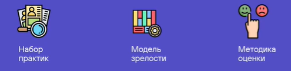
Основные подходы и фреймворки
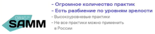

Путь самурая
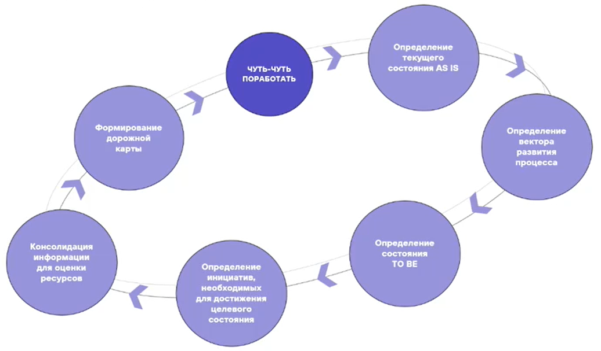
DAF: Cooking book
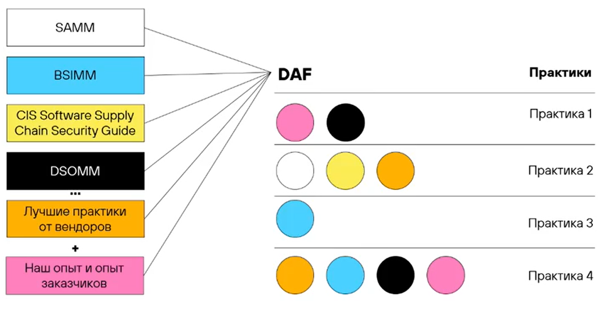
DAF: Артефакты
Пиратская карта
Таблица оценки и тепловая матрица
Пирамида зрелости
DAF: Пиратская карта
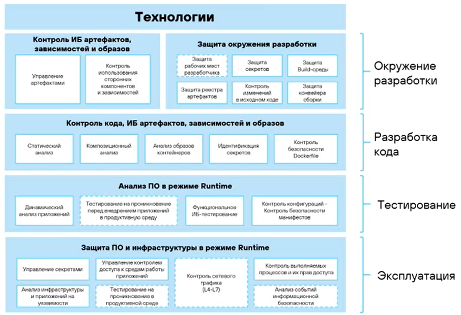
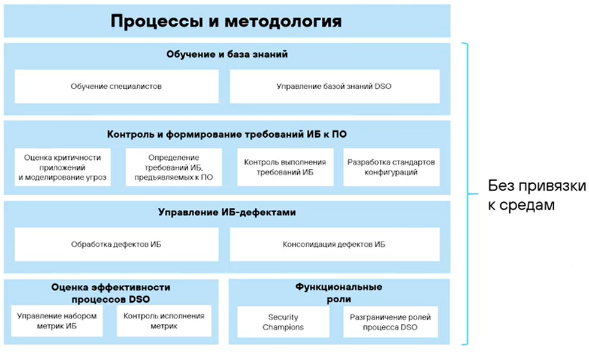
DAF: Таблица оценки
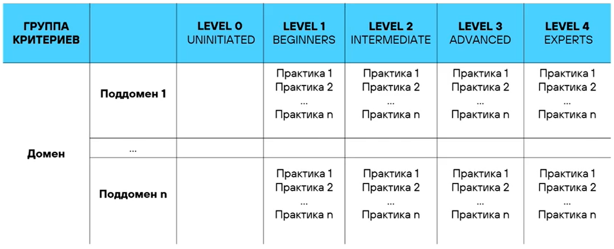
DAF: Тепловая матрица
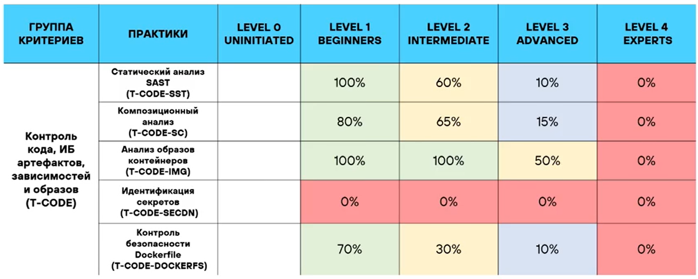
DAF: Пирамида зрелости
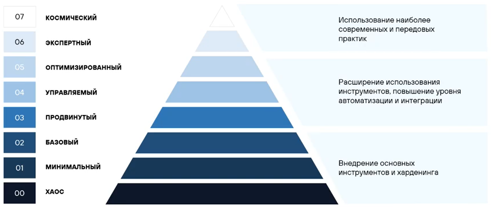
DAF: Пример практики
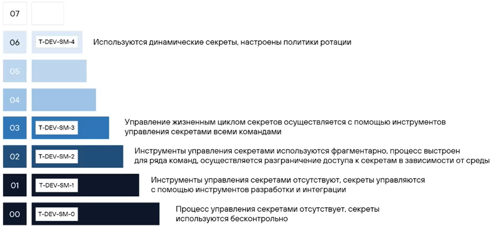
DAF: FTE
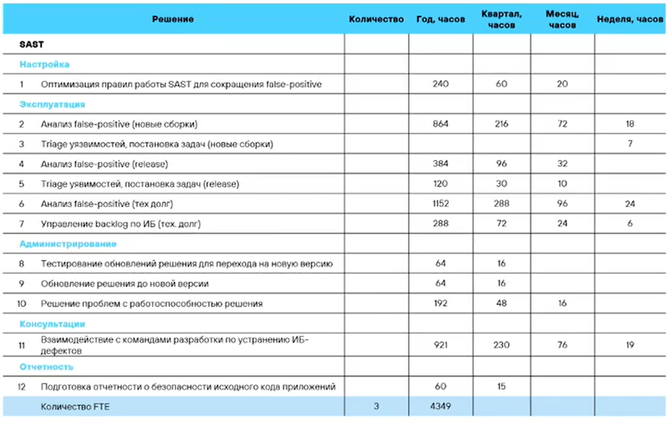
1. Заполняем опросник
2. Указываем ставку специалиста
3. DAF считает FTE и стоимость
DAF: Результат оценки
1. Понимание, где вы сейчас
2. Понимание, что надо сделать прямо сейчас и куда двигаться, в том числе в долгосрочной перспективе
3. Какие инвестиции необходимы сейчас